概要と証跡の範囲
Web Editorは自然な日本語を既存のTEXT.ja/enへ集約。本体は短いカタカナを中心にui_text(ID)で描画し、既存の保存形式・機器プロトコル上の英語識別子は表示時だけ変換しました。
Web画面はChromeとEditorのモック接続、本体画面はホスト側LCD描画テストの出力です。実機写真ではありません。実機の表示・音声割り込み時間は未確認です。
FM-1本体のドット画面
ここが本体のドット画像です。ホスト側で実際の描画コードを使って出力した240×240pxのPNGを、拡大せず表示しています。画像をクリックすると元データを開けます。実機LCDの写真ではありません。

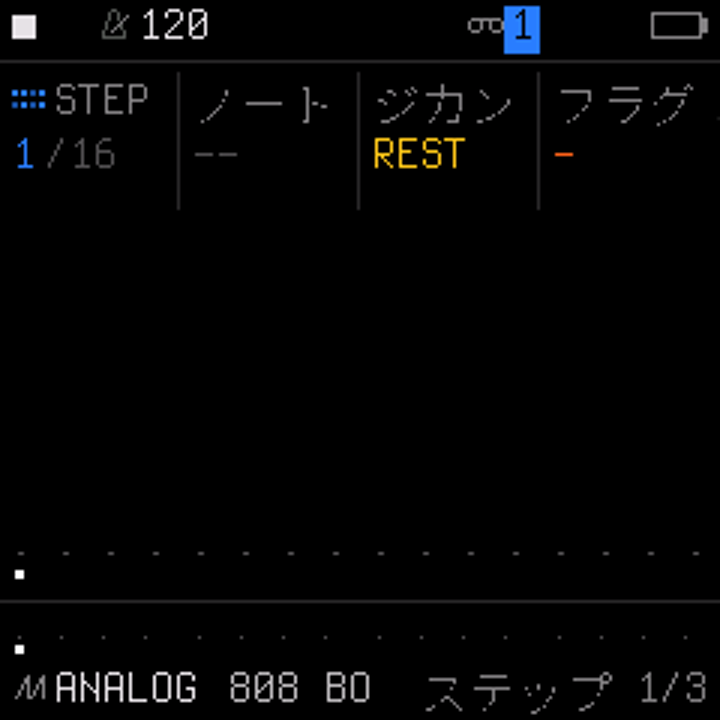

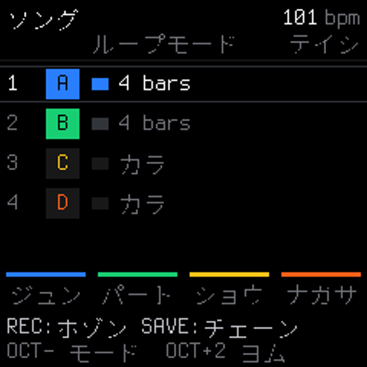
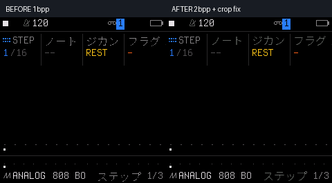
既存の上部20px、4列各60pxの配置を保持し、日本語glyphは使用する74字だけを2bit階調で収録（5,920B）。フォントの「ヘ」で欠けていた最下段を直し、生成時に全glyphの上下端を検査します。下の一覧にはホスト側で描画した35画面をまとめています。
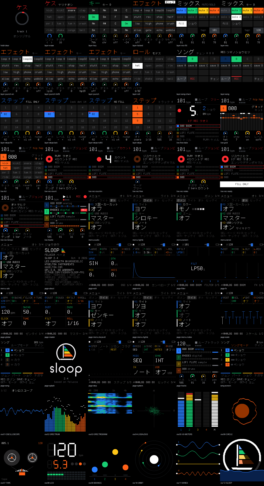

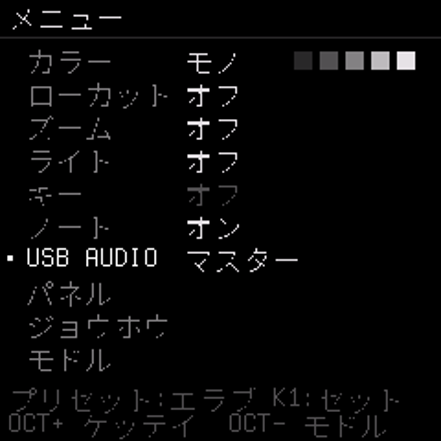

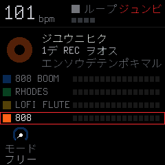

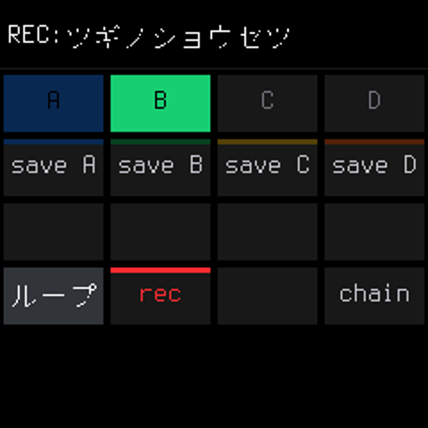

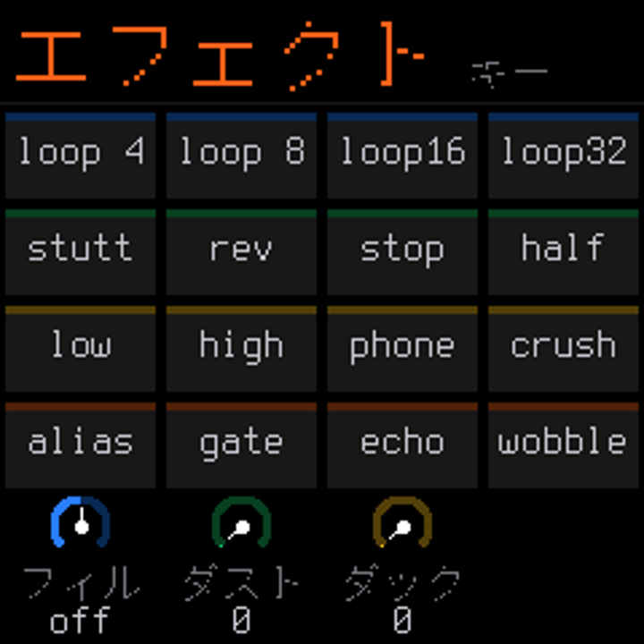
35画面を個別の240×240 PNGで見る

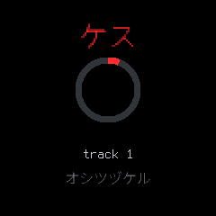

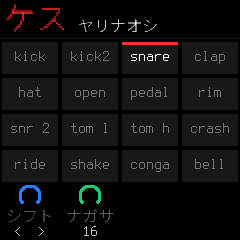

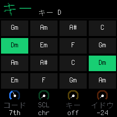

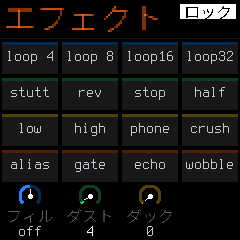

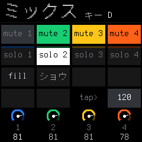

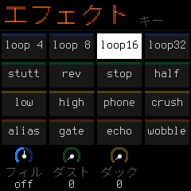

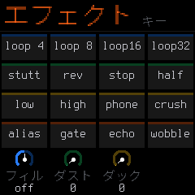

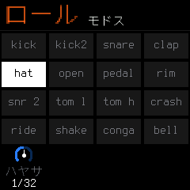


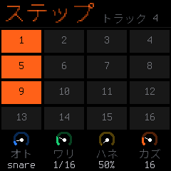

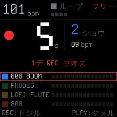

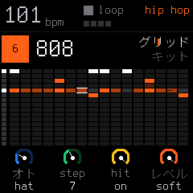

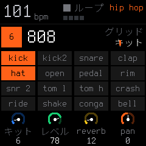

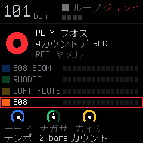

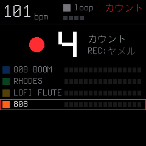

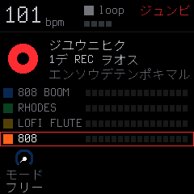

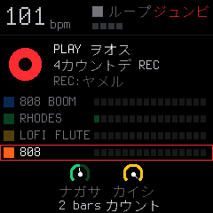

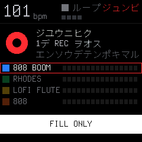

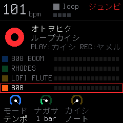

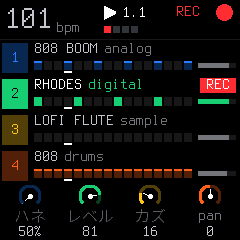

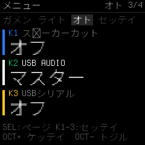

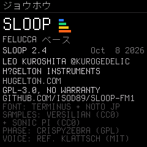

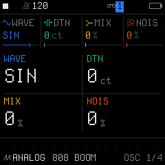

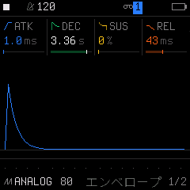

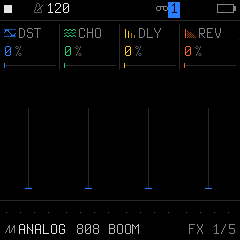

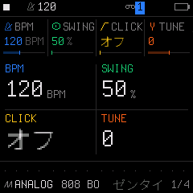

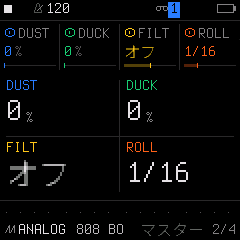

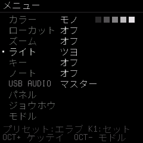

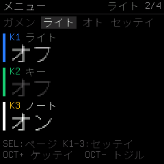

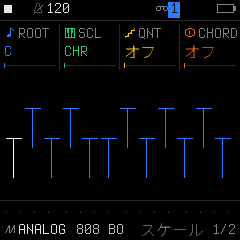

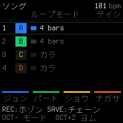

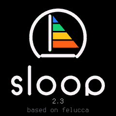

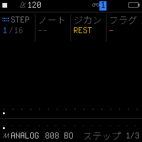

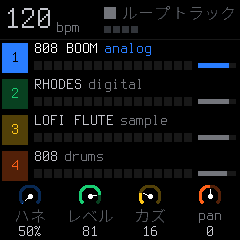

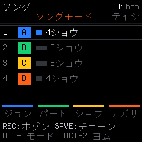
Web Editor：日本語化した画面
各画像をクリックすると全体を表示します。375px幅で7タブすべてとインストーラーを記録し、1280px幅でも7タブを検査しました。
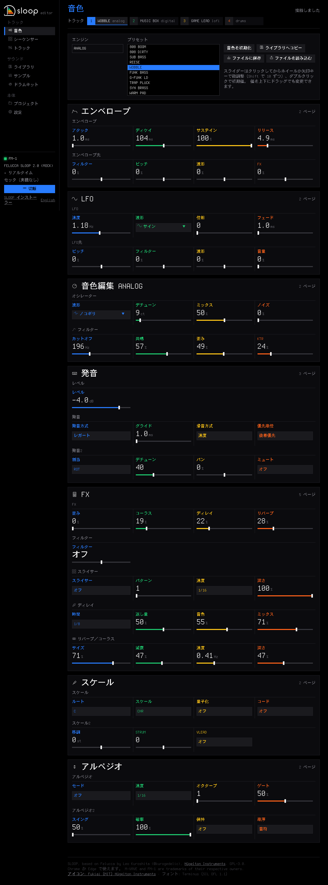

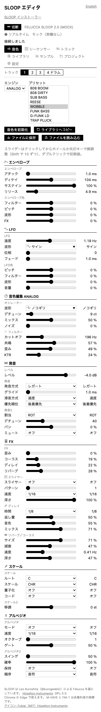

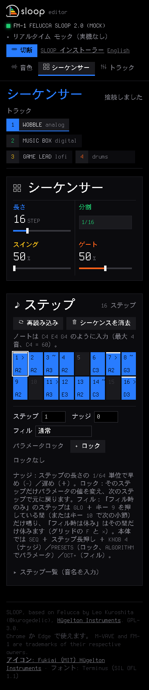

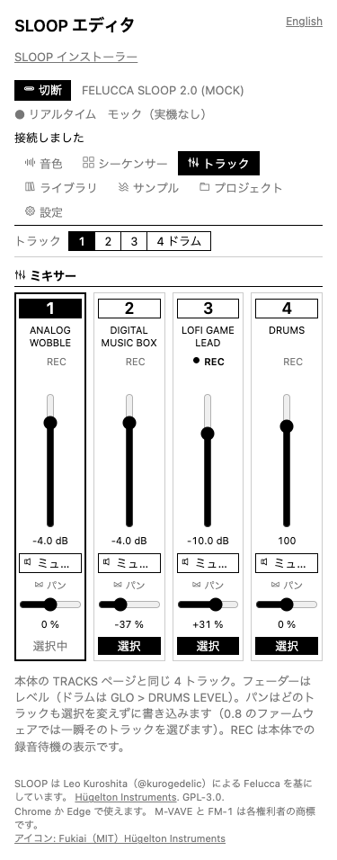

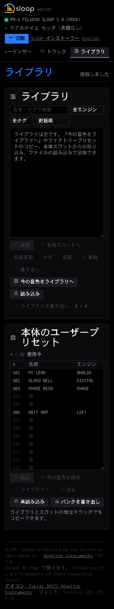

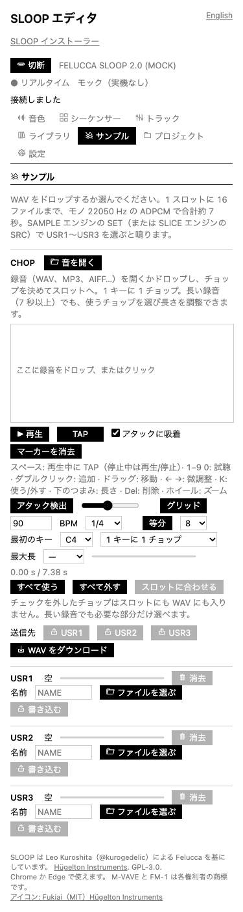

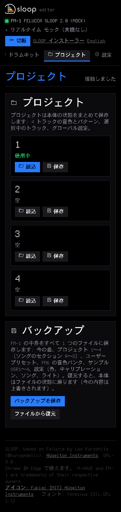

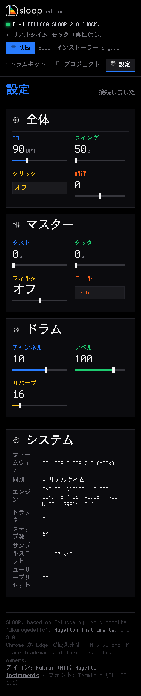

縦スクロールの操作GIF
375×820pxのブラウザー画面を上から下へ動かして記録しました。縦スクロールが必要な6タブとインストーラーを掲載します。プロジェクト画面は画面内に収まるため静止画のみです。
容量・テスト結果
| 項目 | 変更前 | 変更後・結果 | 証跡 |
|---|---|---|---|
| FWアプリ | 550,256 B | 562,016 B（+11,760 B） | 前 ／ 後 |
| アプリ領域残量 | 31,308 B | 19,548 B | 同上 |
| RAM .data＋.bss | 72,720 B | 72,892 B（+172 B） | 同上 |
| 描画プール | 322,272 B | 322,272 B（変化なし） | 同上 |
| Web Editorの生HTML | 242,617 B | 245,961 B（+3,344 B） | 詳細記録 |
| インストーラーの生HTML | 19,241 B | 20,847 B（+1,606 B） | 詳細記録 |
- PASS ターゲットFWビルド、RAM・Flash・描画プールの制限検査。今回のビルドログ
- PASS ASCII、カタカナ、濁点・半濁点、長音、小文字、不正UTF-8、未登録glyph、画面外描画、主要操作、2万フレームのUI fuzz。今回のUIテストログ
- PASS Chromeモックの15画面で横はみ出し・パラメーター名のクリップなし。日本語ツールチップ、確認ダイアログ、英語切替を確認。レイアウト記録
- PASS 音声ゴールデン97件は元コミットとハッシュ差分なし。前 ／ 後
- 既存FAIL ホスト試験総合のCPU命令予算は元コミットも今回版も同じ項目・値で超過。合格扱いにはしていません。今回の総合ログ ／ 基準値
音声DMA割り込み、DSP、MIDIタイミングのコードは変更していません。2bit文字は既存のオフスクリーン描画で処理し、LCD転送サイズと更新回数は変えません。音声ゴールデン97件は一致し、ターゲット音声割り込みの静的予算値も元コミットと同じ255です。ただし実機での最大割り込み時間と音切れは未測定のため、「絶対に遅延しない」とは断定できません。マージ前には再生負荷別に
felucca_dbg.max_us と late を変更前後で比較します。未確認・既知の制限・次段階
- 未確認：実機LCDの色と視認性、実機Flash書き込み・復帰、実機での音声割り込み最大時間と音切れ。
- 既知の制限：任意Unicode・一般的な日本語入力は対象外。未収録glyphは
?。固有名詞・機器名・短い技術語は英語のままの場合があります。 - Phase 3：
firmware/src/ui_strings.hにLanguageとcurrentLanguageを追加し、ui_text()の参照先を切替。ui_menu.c／ui_input.cへLANG項目と再描画、既存設定保存処理へ永続化・旧形式フォールバックを追加。Webの既存英語リソースと言語ボタンを維持。 - 元FWへ戻す：先にEditorの「プロジェクト」からバックアップを保存し、公式FM-1 V15の
FM-1.fwscをインストーラーの「公式ファームウェアに戻す」で選択。実機復帰操作は今回未実施。詳しい手順